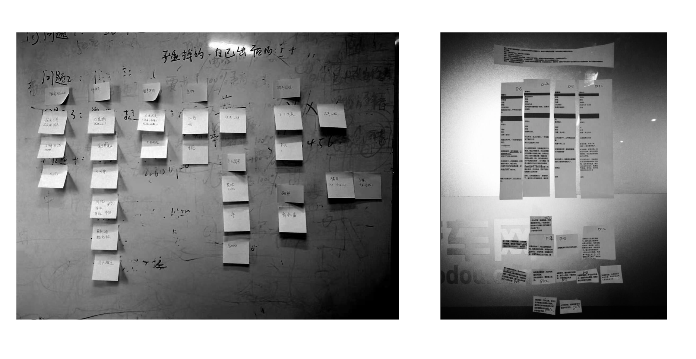

毛豆新车客户分析
毛豆新车网的交互设计团队与产品团队合作，对 6 个城市有购车需求的潜在客户进行了深度访谈，以理解这三个人群的构成行为和需求，并发掘产品机会点。
项目时间：2018 年 9 月
Highlight
超过 20 名成员参与了此项目
走访了 6 个城市
超过 120 名受访者
项目综述 Overwiew
项目背景
结果
影响
计划与准备 Planning and prepraration
对齐研究目的
在启动会上，我们和关键成员对齐主要研究目的

Aligning the research objectives
We had kick-off meeting with key stakeholders and discussed the research objectives .
项目组培训
由于大多数项目组成员没有做用户访谈的经验，我们队项目组成员进行了一次关于用户访谈方法和数据分析的分享。
Training for project members
As most of the project members had very little exprience in doing formal user interview, we organize a presentation of how to du user interview and how to analyze data for them.
数据收集 Data collection
我们组成不同小组，每个小组拜访不同的城市。每个小组有 4 到 6 名成员。
We were sperated into different groups, which was assigned with a target city. Each group contained 4 to 6 members.
We conducted in-depth interviews and user testing with over 100 users all together.

数据总结 Data sythesis
每个调研日，我们会当天开会进行总结。在所以调研结束后，我们有一个星期时间，对所以数据进行总结并撰写报告。
We had daily sythesis for each data collecting days and online meeting for sharing findings.
After data collection periods, we had one week for gain insight from all datas.
发现 Findings
重要因子
我们发现了一些影响人在线通过贷款购买新车的重要因子，比如年龄和职业。
Important factors
We found some important factors which makes a person willing to purchase a car online with low down payment. Some of them are:
- Age - A person who was born in 80s and 90s are more open to purchasing online
- Occupation- A person who needs car for making money are more likely to purchase a car with loan.
人物画像
我们对一些关键变量进行聚类，生成了 3 个人物画像。
Persona
We also generated 3 personas. ( Those data can't be shown to public )
影响 Impact
通过发现，我们提取了一些可以用于客户获取，界面设计，金融方案和定价方面的建议。作为 UED 的成员，我们在公司内部向高层和产品经理们展现了体验研究的价值和我们的专业性。
Besides datas about buyers, we defined advices for customer acquisition， UI design， financian plan and pricing.
As members from UX team, We demostrated the value of UX research to product managers and the professional skills we have.
个人角色 My role
在这个项目中，我承担的角色包括：确定研究框架和研究问题，对项目组成员进行用户研究的培训，研究执行以及和其他关键成员进行最终数据分析和总结。
In this project, I
- Lead the user research training for project members.
- Define the research framework and interview questions.
- Conduct interview and user testing.
- Analyze all data gathered and report findings with other key stakeholders.